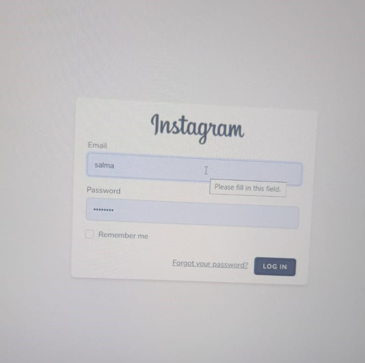

Project Overview
Developed a social media application mimicking Instagram features including user authentication, photo uploads, likes, comments, and follower/following functionality.


Case Study • Laravel & SQL
Developed a social media application mimicking Instagram features including user authentication, photo uploads, likes, comments, and follower/following functionality.